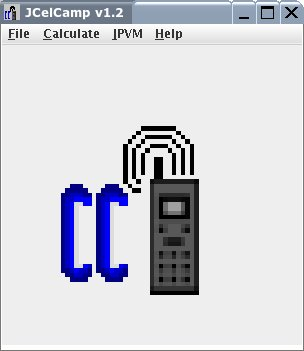
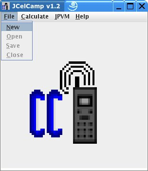
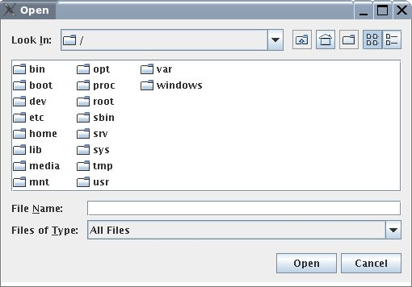
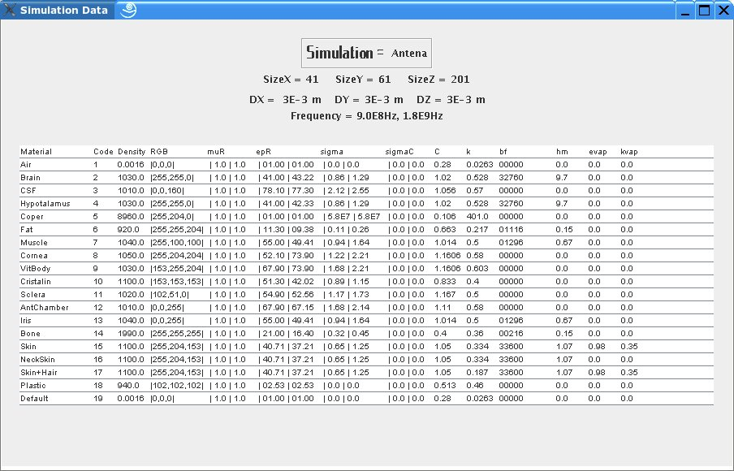

The first figure shows the initial screen of CelCamp.

To create a new simulation using a model File, choose File and select New as shown in the following figure.

When the option New is chosen, the following screen will open so that you can choose a material model, based on a tree dimensional model (*.3dm).

After opening the model, the following screen will open, showing the Simulation Data, and you can calculate Eletromagnetic Fields (see Calculate).
